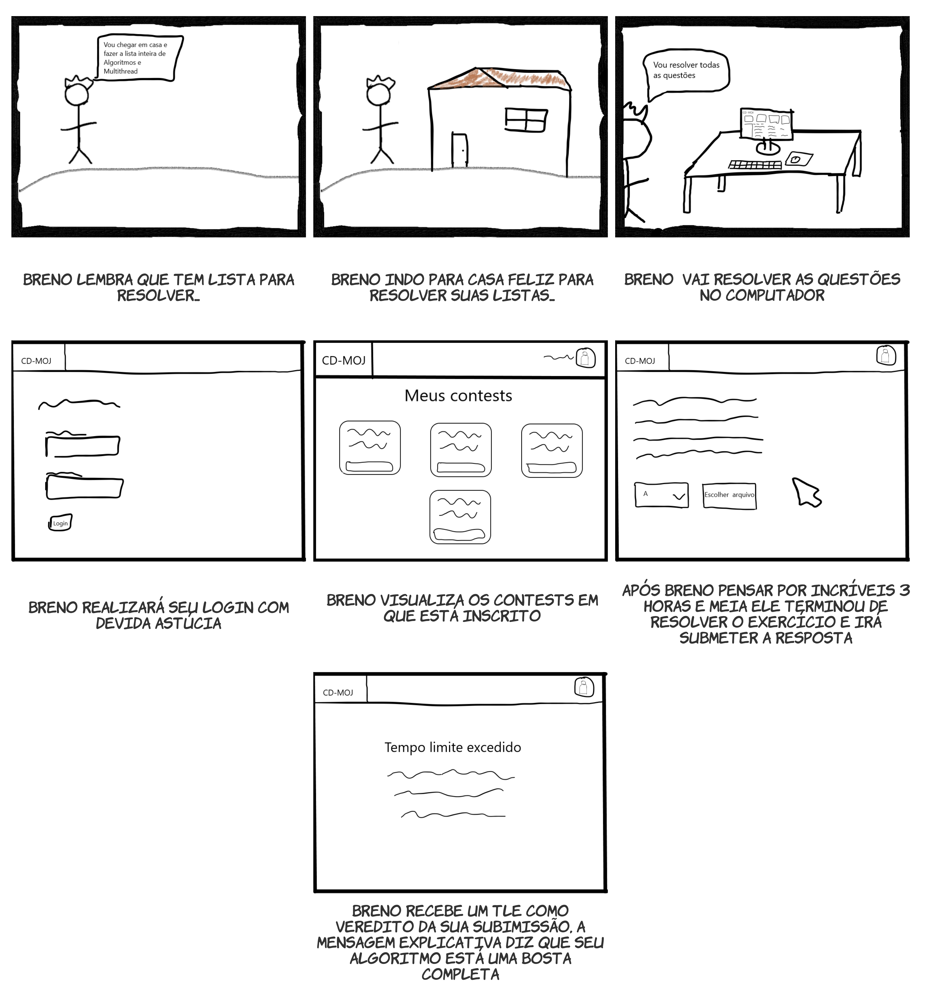
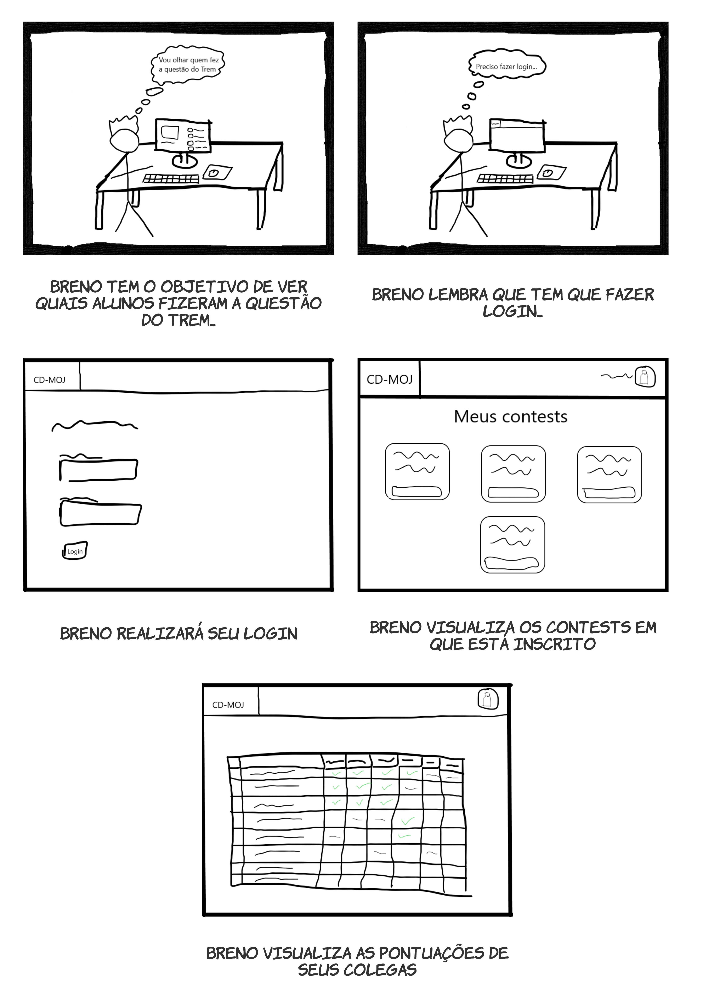
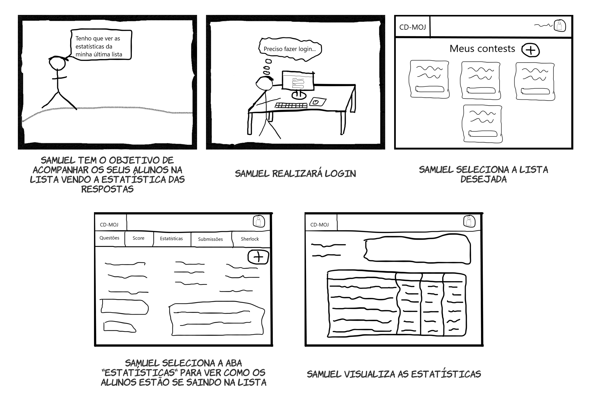
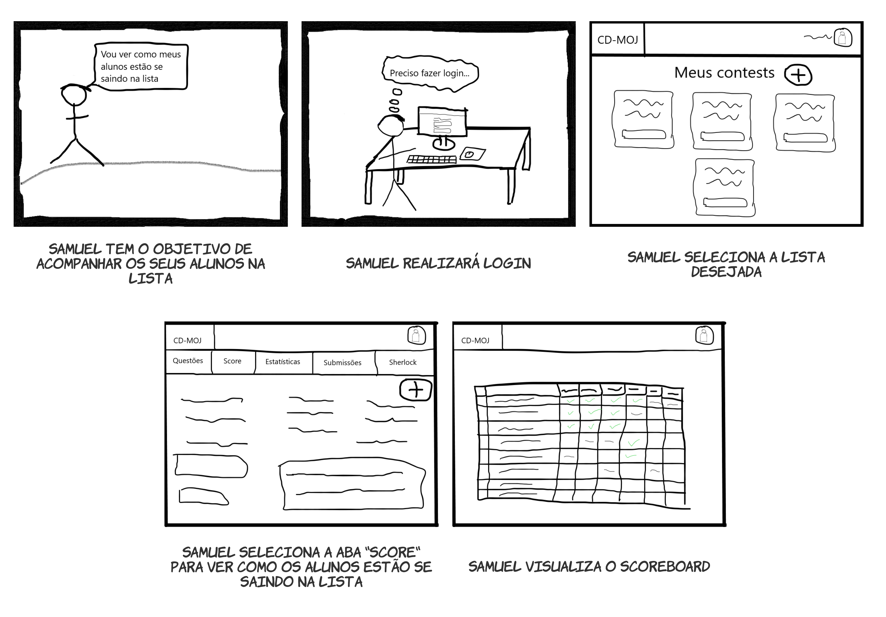
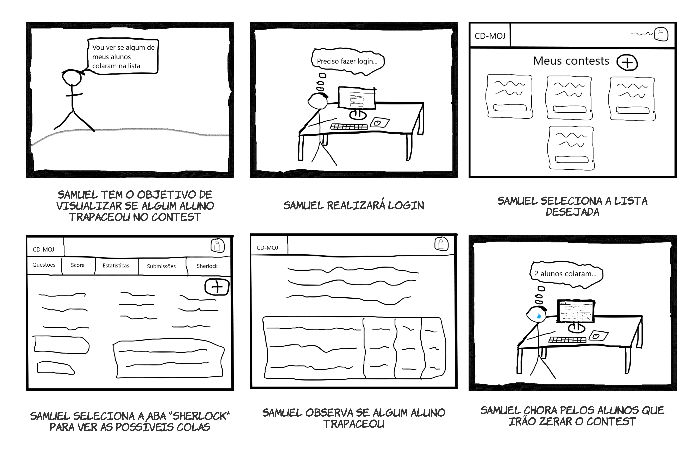

Protótipo de baixa fidelidade - Storyboard
1. Introdução
Um protótipo de baixa fidelidade não parece muito com o produto final, e também não provê a mesma funcionalidade. Pode utilizar diferentes materiais, como papel e cartolina em vez de telas eletrônicas ou metal, ele pode executar apenas um conjunto limitado de funções, ou pode apenas representar as funções e não executar nenhuma delas (Sharp, Rogers e Preece, 2019).
2. Storyboards
Storyboard é um exemplo de protótipo de baixa fidelidade, normalmente é realizado em conjunto com cenários. Um storyboard consiste em uma série de sketches (esboços) ou uma série de cenas mostrando como um usuário pode executar uma tarefa com um dispositivo interativo. Quando realizado em conjunto com cenários ele provê mais detalhes aos stakeholders e possibilita a interpretação (role-play) com o protótipo, interagindo com ele ao passar pelos cenários (Sharp, Rogers e Preece, 2019).
2.1 Aluno
2.1.1 Submissão aceita

2.1.2 Submissão recusada

2.1.3 Visualizar Scoreboard

2.2 Professor
2.2.1 Submeter contest

2.2.2 Visualizar Estatísticas

2.2.3 Visualizar Submissões

2.2.4 Visualizar Scoreboard

2.2.5 Visualizar Sherlock

3. Referências Bibliográficas
- SHARP, Helen; ROGERS, Yvonne; PREECE, Jenny. "INTERACTION DESIGN beyond human-computer interaction". John Wiley & Sons, 2019.
Versionamento
| Versão | Data | Modificação | Autor |
|---|---|---|---|
| 1.0 | 27/10/2020 | Criação do documento | Todos os integrantes |